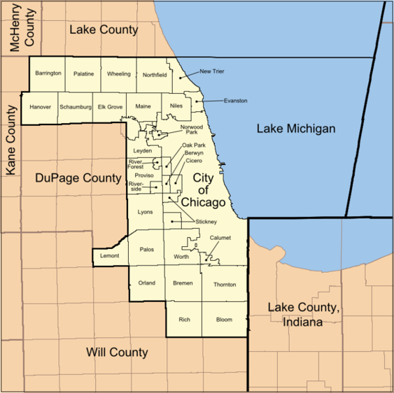
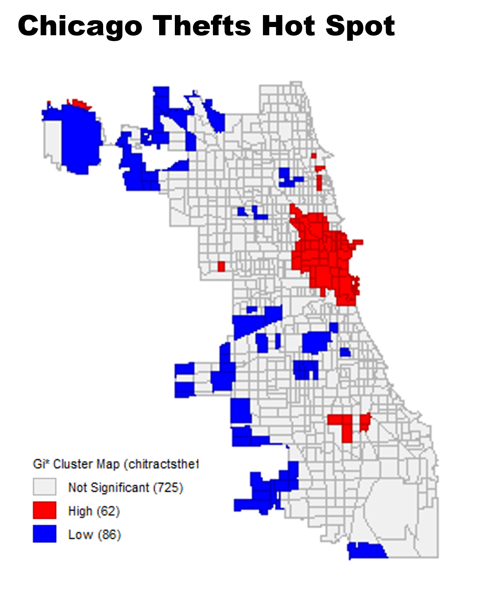

Hello!
Welcome to Week 1 of Web GIS
Overview of today's class
- Introductions
- Course Overview
- The problem with maps
- Create a basic web map in ArcGIS Online
- Zoom Polls
- Introductions
Course Overview
Course Ecosystem
| Zoom | |
|---|---|
| Github |
|
| Blackboard |
|
3 Mains Goals of this Course:
- Technical: students will be able to create interactive, online maps using ArcGIS Online & Leaflet.js
- Effective Design: Students will have a deeper knowledge of effective map design & functionality
- Critical Awareness: Students will develop a critical understanding that maps are not neutral representations of the world
1. Technical: Main Course Tools
Some AGOL Examples:
Some Leaflet Examples:
Pros/Cons of AGOL
| Pros | |
|---|---|
| Cons |
Pros/Cons of Leaflet
| Pros | |
|---|---|
| Cons |
Weeks 1-4: ArcGIS Online
Weeks 5-8: Leaflet.js
2. Effective Design
- ArcGIS Online is not necessarily easier than Leaflet, but it does afford beginners more design options than Leaflet.
- The first five weeks will be synchronous to allow for discussion on how your maps read to others.
- The last 3 weeks will be more technical in nature, and while discussion will be helpful I am not as concerned with design & Leaflet.
Course Assignments/Discussion
| Assignments | |
|---|---|
| Discussion Board |
3. Critical Awareness
- Maps are commonly assumed to be scientifically objective representations of the world.
- However, maps are not neutral and by their very nature misrepresent information
This course is focused on spatial data visualization techniques.
- However, students should be conscientious of how data management and statistical choices affect their visualization.
- We do not have the time to go in-depth on these topics in this 2-credit course, but we will discuss them in the lectures.
- In reality, most projects will be about 90% data wrangling and manipulation, and 10% visualization.
Lecture - Week 1
All maps must distort information
Okay, technically if you had a 1:1 scale map you could create a totally objective, unbiased map....
Space itself is distorted


And what is shown in that space is distorted

Features are omitted, exaggerated, shrunk, warped, smoothed, etc.
Maps are not omni-purpose tools
Usually information is greatly simplified in order to communication a message:
Is this map a completely objective representation of income?
Aggregration Considerations
What can you do to make this map more readable?

Aggregrate the data:
Effects of different classification methods

Other problems with aggregating:
Modifiable Areal Unit Problem
Administrative units are not always drawn randomly or objectively...

Ecological Fallacy
Who is the "average" person in Cook County?
https://en.wikipedia.org/wiki/File:Map_of_Cook_County_Illinois_showing_townships.png
Which area is the most blue?
Consider how different choices affect this map and the message it sends
The previous examples were all choropleth maps - by far the most popular thematic map style
Other aggregation techniques
- Proportional Symbols
- Cartograms
Proportional Symbols
Cartograms

Other techniques besides aggregating to random areal units?
Dot Density

Dot Density

Note that symbols on dot density can be styled in misleading ways as well

Heat Map
Basic idea behind a heat map


Honorary Mention
Often confused as an aggregation map showing "more" or "less" of something - but shows something totally different!
Finally, let's make a map
5 steps:
- Choose Basemap
- Add your Data
- Customize/Select Symbology
- Save
- Share the Finished Product
Demonstration
Assignment 1: Make an AGOL Web Map
Submit a project log with your URL to blackboard
Assignment 1: Make an AGOL Web Map
Make sure to share your map
Some basic cartographic issues I want to avoid seeing:

Questions?